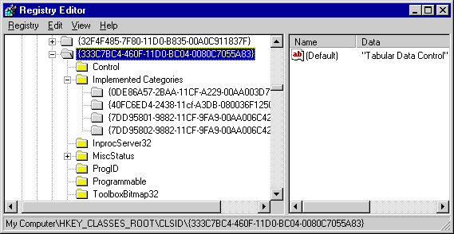
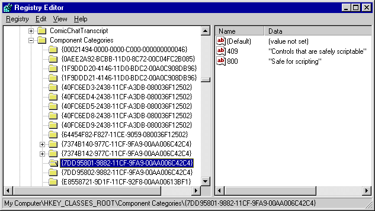

| ||||||
This article describes the code that a control developer should implement to ensure safe initialization and safe scripting for a Microsoft® ActiveX® control.
Many Microsoft ActiveX Controls are initialized with persistent data, which is either local or remote, and most ActiveX Controls are scriptable (they support a set of methods, events, and properties). Both initialization (with persistent data) and scripting require certain safeguards to ensure that security is not violated.
An example of a control that poses a security risk at initialization time would be a data compression/decompression control. If the user pointed this control to a remote, compressed file that contained a Trojan-horse copy of a system file (such as Kernel.dll) and requested that the control decompress this file, system security could be breached.
An example of a control that poses a security risk at scripting time would be a control that relies on certain system settings before a script can be safely executed. It would be up to the control developer to provide the necessary code that retrieves the system settings before allowing the script to execute.
An overview of security issues related to ActiveX control design and development can be found in Designing Safe ActiveX Controls.
Microsoft Internet Explorer 3.0 has three security levels: Low, Medium, and High. When the user attempts to display a page containing a control that does not guarantee safe initialization or scripting, Internet Explorer 3.0 does one of the following based on the current security level.
| Security level | Internet Explorer 3.0 notification |
| Low | No warnings. Controls can be initialized or scripted regardless of data source or scripts. |
| Medium | User is warned of potential safety violation prior to loading the page. User can accept or reject initialization or scripting. If user disables scripting, scripting errors occur when user views the page and attempts to execute the script. |
| High | User is warned of potential safety violation prior to loading the page. User cannot accept or reject initialization or scripting. Scripting errors occur if user attempts to view page and execute script. |
Note Most control developers set their Internet Explorer 3.0 security level to Low during the early stages of control development. However, prior to implementing the safe initialization and scripting code, security should be reset to High (the default setting) to ensure adequate testing of the control.
When a control is initialized, it can receive data from an arbitrary IPersist* interface (from either a local or a remote URL) for initializing its state. This is a potential security hazard because the data could come from an untrusted source. Controls that guarantee no security breach regardless of the data source are considered safe for initialization.
There are two methods for indicating that your control is safe for initialization. The first method uses the Component Categories Manager to create the appropriate entries in the system registry. Internet Explorer 3.0 examines the registry prior to loading your control to determine whether these entries appear. The second method implements an interface named IObjectSafety on your control. If Internet Explorer 3.0 determines that your control supports IObjectSafety, it calls the IObjectSafety::SetInterfaceSafetyOptions method prior to loading your control in order to determine whether your control is safe for initialization.
Code signing can guarantee a user that code is trusted. However, allowing ActiveX Controls to be accessed from scripts raises several new security issues. Even if a control is known to be safe in the hands of a user, it is not necessarily safe when automated by an untrusted script. For example, Microsoft Word is a trusted tool from a reputable source, but a malicious script can use its automation model to delete files on the user's computer, install macro viruses, and worse.
There are two methods for indicating that your control is safe for scripting. The first method uses the Component Categories Manager to create the appropriate entries in the system registry (when your control is loaded). Internet Explorer 3.0 examines the registry prior to loading your control to determine whether these entries appear. The second method implements the IObjectSafety interface on your control. If Internet Explorer 3.0 determines that your control supports IObjectSafety, it calls the IObjectSafety::SetInterfaceSafetyOptions method prior to loading your control in order to determine whether your control is safe for scripting.
As mentioned previously, Internet Explorer 3.0 examines the system registry to determine whether a control is safe for initialization and/or scripting. Internet Explorer 3.0 examines the registry by calling the ICatInformation::IsClassOfCategories method to determine if the control supports the given category (safe for initializing or safe for scripting).
If a control uses the Component Categories Manager to register itself as being safe, the registry entry for that control contains an Implemented Categories key, which contains one or two subkeys. One subkey is set if the control supports safe initialization, and the other subkey is set if the control supports safe scripting. The safe initialization subkey corresponds to CATID_SafeForInitializing; the safe scripting subkey corresponds to CATID_SafeForScripting. (Unlike the other subkeys for the component categories that are defined in the Comcat.h file, the subkeys for safe initialization and scripting are defined in Objsafe.h.)
The following illustration shows a snapshot of the registry entry for the Tabular Data Control, an ActiveX control that ships with Internet Explorer and allows authors to create data-driven Web pages. Because the control is safe for scripting and initialization, it marks itself in the registry as safe for scripting (7DD95801-9882-11CF-9FA9-00AA006C42C4) and safe for initializing from persistent data (7DD95802-9882-11CF-9FA9-00AA006C42C4).

The system registry contains a Component Categories key that lists subkeys for each of the categories of functionality that are implemented or required by components and applications installed on the system. The following illustration shows a snapshot of the Component Categories key. Observe that the CATID_SafeForScripting (7DD95801-9882-11CF-9FA9-00AA006C42C4) and the CATID_SafeForInitializing (7DD95802-9882-11CF-9FA9-00AA006C42C4) are included in the list.

To create the subkey for the appropriate component category, your control must complete the following steps:
The following example shows how these steps were accomplished and combined into a single function named CreateComponentCategory in the sample control.
#include "comcat.h"
HRESULT CreateComponentCategory(CATID catid, WCHAR* catDescription)
{
ICatRegister* pcr = NULL ;
HRESULT hr = S_OK ;
hr = CoCreateInstance(CLSID_StdComponentCategoriesMgr,
NULL, CLSCTX_INPROC_SERVER, IID_ICatRegister, (void**)&pcr);
if (FAILED(hr))
return hr;
// Make sure the HKCR\Component Categories\{..catid...}
// key is registered.
CATEGORYINFO catinfo;
catinfo.catid = catid;
catinfo.lcid = 0x0409 ; // english
// Make sure the provided description is not too long.
// Only copy the first 127 characters if it is.
int len = wcslen(catDescription);
if (len>127)
len = 127;
wcsncpy(catinfo.szDescription, catDescription, len);
// Make sure the description is null terminated.
catinfo.szDescription[len] = '\0';
hr = pcr->RegisterCategories(1, &catinfo);
pcr->Release();
return hr;
}
When a subkey has been created for the requisite category, the control should register the category as being implemented by the control. To register the category as being implemented, your control should complete these tasks:
The following example shows how these steps were accomplished and combined into a single function named RegisterCLSIDInCategory in the sample control.
#include "comcat.h"
HRESULT RegisterCLSIDInCategory(REFCLSID clsid, CATID catid)
{
// Register your component categories information.
ICatRegister* pcr = NULL ;
HRESULT hr = S_OK ;
hr = CoCreateInstance(CLSID_StdComponentCategoriesMgr,
NULL, CLSCTX_INPROC_SERVER, IID_ICatRegister, (void**)&pcr);
if (SUCCEEDED(hr))
{
// Register this category as being "implemented" by the class.
CATID rgcatid[1] ;
rgcatid[0] = catid;
hr = pcr->RegisterClassImplCategories(clsid, 1, rgcatid);
}
if (pcr != NULL)
pcr->Release();
return hr;
}
A control should register the safe initialization and scripting categories when its DLLRegisterServer function is called. (DLLRegisterServer is called by the Component Object Model [COM] to create the registry entries for all classes supported by the control.) In the sample control, the DLLRegisterServer function contains calls to the CreateComponentCategory and RegisterCLSIDInCategory functions (which register the control as safe for initialization and scripting). The following implementation of DLLRegisterServer was taken from the sample control.
STDAPI DllRegisterServer(void)
{
HRESULT hr; // return for safety functions
AFX_MANAGE_STATE(_afxModuleAddrThis);
if (!AfxOleRegisterTypeLib(AfxGetInstanceHandle(), _tlid))
return ResultFromScode(SELFREG_E_TYPELIB);
if (!COleObjectFactoryEx::UpdateRegistryAll(TRUE))
return ResultFromScode(SELFREG_E_CLASS);
// Mark the control as safe for initializing.
hr = CreateComponentCategory(CATID_SafeForInitializing, L"Controls
safely initializable from persistent data!");
if (FAILED(hr))
return hr;
hr = RegisterCLSIDInCategory(CLSID_SafeItem, CATID_SafeForInitializing);
if (FAILED(hr))
return hr;
// Mark the control as safe for scripting.
hr = CreateComponentCategory(CATID_SafeForScripting, L"Controls
safely scriptable!");
if (FAILED(hr))
return hr;
hr = RegisterCLSIDInCategory(CLSID_SafeItem, CATID_SafeForScripting);
if (FAILED(hr))
return hr;
return NOERROR;
}
Just as a control is responsible for creating the registry entries for all safety categories it supports, a control is also responsible for unregistering its categories. The COM calls a control's DLLUnRegisterServer function to remove appropriate registry entries before unloading the control.
To unregister the safe initialization and/or safe scripting categories, the control should do the following:
The following example shows how these steps were accomplished and combined into a single function named UnRegisterCLSIDInCategory in a sample control.
HRESULT UnRegisterCLSIDInCategory(REFCLSID clsid, CATID catid)
{
ICatRegister* pcr = NULL ;
HRESULT hr = S_OK ;
hr = CoCreateInstance(CLSID_StdComponentCategoriesMgr,
NULL, CLSCTX_INPROC_SERVER, IID_ICatRegister, (void**)&pcr);
if (SUCCEEDED(hr))
{
// Unregister this category as being "implemented" by the class.
CATID rgcatid[1] ;
rgcatid[0] = catid;
hr = pcr->UnRegisterClassImplCategories(clsid, 1, rgcatid);
}
if (pcr != NULL)
pcr->Release();
return hr;
}
As mentioned previously, a control is responsible for removing the safe initialization and scripting category entries when the DLLUnRegisterServer function is called. The following excerpt is taken from a sample control that supports both safe initialization and safe scripting.
STDAPI DllUnregisterServer(void)
{
HRESULT hr; // HResult used by Safety Functions
AFX_MANAGE_STATE(_afxModuleAddrThis);
if (!AfxOleUnregisterTypeLib(_tlid))
return ResultFromScode(SELFREG_E_TYPELIB);
if (!COleObjectFactoryEx::UpdateRegistryAll(FALSE))
return ResultFromScode(SELFREG_E_CLASS);
// Remove entries from the registry.
hr=UnRegisterCLSIDInCategory(CLSID_SafeItem, CATID_SafeForInitializing);
if (FAILED(hr))
return hr;
hr=UnRegisterCLSIDInCategory(CLSID_SafeItem, CATID_SafeForScripting);
if (FAILED(hr))
return hr;
return NOERROR;
}
The IObjectSafety interface allows a container to ask a control to make itself safe, or to retrieve the current initialization or scripting capabilities for the control. This interface is defined in the Objsafe.h file. Currently two capabilities are supported: safe for scripting and safe for initialization. These capabilities correspond to the following bit flags, which are defined in Objsafe.h.
| INTERFACESAFE_FOR_UNTRUSTED_DATA | Specifies that the interface is safe for initialization. |
| INTERFACESAFE_FOR_UNTRUSTED_CALLER | Specifies that the interface is safe for scripting. |
(Additional capabilities may be defined at a future date.)
The IObjectSafety interface supports two methods: IObjectSafety::GetInterfaceSafetyOptions and IObjectSafety::SetInterfaceSafetyOptions. The first method returns the control's security capabilities (as specified by either of the two bit flags listed above). The second method allows a container to request that a control configure itself for safe initialization or scripting. The following listing from Objsafe.h contains the interface and method definitions.
// Option bit definitions for IObjectSafety:
#define INTERFACESAFE_FOR_UNTRUSTED_CALLER 0x00000001
// Caller of interface may be untrusted.
#define INTERFACESAFE_FOR_UNTRUSTED_DATA 0x00000002
// Data passed into interface may be untrusted.
// {CB5BDC81-93C1-11cf-8F20-00805F2CD064}
DEFINE_GUID(IID_IObjectSafety, 0xcb5bdc81, 0x93c1, 0x11cf, 0x8f, 0x20,
0x0, 0x80, 0x5f, 0x2c, 0xd0, 0x64);
interface IObjectSafety : public IUnknown
{
public:
virtual HRESULT __stdcall GetInterfaceSafetyOptions(
/* [in] */ REFIID riid,
/* [out] */ DWORD __RPC_FAR *pdwSupportedOptions,
/* [out] */ DWORD __RPC_FAR *pdwEnabledOptions) = 0;
virtual HRESULT __stdcall SetInterfaceSafetyOptions(
/* [in] */ REFIID riid,
/* [in] */ DWORD dwOptionSetMask,
/* [in] */ DWORD dwEnabledOptions) = 0;
};
Although some containers call IObjectSafety::GetInterfaceSafetyOptions to retrieve the default capabilities for a control, Internet Explorer 3.0 does not. Instead, it calls IObjectSafety::SetInterfaceSafetyOptions prior to initializing a control. And, if the control supports scripting, it calls IObjectSafety::SetInterfaceSafetyOptions a second time. This function has three arguments: the first specifies the interface ID for an interface on the control that the container wants to access; the second specifies the capabilities that the container would like to set; the third specifies how the container would like to set these options.
Did you find this topic useful? Suggestions for other topics? Write us!
© 1999 Microsoft Corporation. All rights reserved. Terms of use.